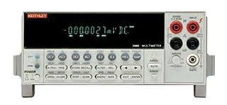

pylab_ml.dmm.keithley.keithley2000.Keithley2000
- class Keithley2000(addr=None, interface=None, backend=None, identify=True, instName=None, **kwargs)[source]
Bases:
KeithleyInterface to the Measuremet-Unit (SMU) Keithley2000.
The Keithley2000 can measure voltage and current precisely
- Date:
May 08, 2026
- Author:
Semi-ATE <info@Semi-ATE.org>

- __init__(addr=None, interface=None, backend=None, identify=True, instName=None, **kwargs)[source]
Connect and initialize.
- Parameters:
- Example: Initialization
>>> vdd = Keithley2000(addr=24) # GPIB or USB address >>> vdd.init() # connect and initialize instrument
- Example: Current measurement
>>> i = vdd.current # measure (supply) current
- Example: Voltage measurement
>>> v = vdd.voltage # measure voltage
Methods
__init__([addr, interface, backend, ...])Connect and initialize.
clear()Clear error status.
close([force])Close connection to instrument.
com_recover([fix])Detect & attempt to recover out of step communication (maybe after timeout).
List of instrument errors.
find_names() returns list of identifiers strings, lhs of = assignments
help()identify([showInstName])Identify message.
init([identify])Connect to Keithley instrument and initialize.
local()Switch back to local instrument control.
message([message])Message display.
mfilter(input)mqtt_add(client, instrument[, liste, qos])Add the instrument to mqtt.
Remove the instrument from mqtt.
publish(topic, value)Publish topic as type='cmd' with paylad=value.
publish_get(function_name, value)Publish function_name as type='get' with paylad=value.
publish_set(function_name, value)Publish function_name as type='set' with paylad=value.
reset()Reset and switch beep off.
Start setup instrument settings, called from class instruments.
temporal_tuple(threshold, aperture)Wrapper for tuple assignment to period & frequency.
Attributes
Get AC current.
Get AC voltage.
Set/get channel number if the instrument have more than one channel.
commandGet current.
Autorange 4-wire resistance measurement on or off.
Set voltage 4-wire resistance range.
Get frequency, set (threshold,aperture).
Get 4-wire resistance.
Autorange current measurement on or off.
Set the current measurement range.
Autorange AC current measurement on or off.
Set the AC current measurement range.
Query IDN.
Return with instname or instname[ch] if it has channels.
interchoicesSet/get the number of measurement to be carried out in a loop.
mqtt_enablemqtt_listGetter for the mqtt_status.
Set the conversion number of power line cycles accuracy, for all converters.
Get period, set (threshold,aperture).
Autorange resistance measurement on or off.
Set the resistance measurement range.
Get resistance.
Autorange voltage measurement on or off.
Set the voltage measurement range.
Autorange AC voltage measurement on or off.
Set the AC voltage measurement range.
Get voltage.
- property ac_current
Get AC current.
- property ac_voltage
Get AC voltage.
- property channel
Set/get channel number if the instrument have more than one channel.
- you can also use:
>>> vdd[0].voltage = 5 # set voltage from channel 0 >>> vdd[1].current = 0.1 # set current from channel 1 >>> v = vdd[1].voltage # measure voltage from channel 1
- clear()
Clear error status.
- close(force=False)
Close connection to instrument.
- com_recover(fix=False)
Detect & attempt to recover out of step communication (maybe after timeout).
Can lose coherency between read request and data, usually because of Timeout this routine can diagnose such loss of coherency and attempt to fix it, when fix=True
- property current
Get current.
- find_names()
find_names() returns list of identifiers strings, lhs of = assignments
- property fr_autorange
Autorange 4-wire resistance measurement on or off.
- property fr_range
Set voltage 4-wire resistance range.
- property frequency
Get frequency, set (threshold,aperture).
- property fresistance
Get 4-wire resistance.
- property i_autorange
Autorange current measurement on or off.
- property i_range
Set the current measurement range.
- property iac_autorange
Autorange AC current measurement on or off.
- property iac_range
Set the AC current measurement range.
- property id
Query IDN.
- identify(showInstName=False)
Identify message.
- init(identify=False)
Connect to Keithley instrument and initialize.
- property instName
Return with instname or instname[ch] if it has channels.
- json = <module 'json' from '/home/runner/miniconda3/envs/test/lib/python3.9/json/__init__.py'>
- local()
Switch back to local instrument control.
- property measurecnt
Set/get the number of measurement to be carried out in a loop.
TODO: this function is not running yet, it is only a dummy
if the result == None than this function not implemented. The return value for the measurement is calculated togetheer with the mfilter setting.
- message(message=None)
Message display.
instrument message (“string”) or ()
- mqtt_add(client, instrument, liste='#', qos=0)
Add the instrument to mqtt.
calling from base_instrument, after the instrument (device) has been create. Normally you have not to use this function, only base_instrument use it.
- Returns:
None.
- mqtt_disconnect()
Remove the instrument from mqtt.
calling from base_instrument, if the instrument are closing. Normally you have not to use this function, only base_instrument use it.
- Returns:
None.
- property mqtt_status
Getter for the mqtt_status.
- property nplc
Set the conversion number of power line cycles accuracy, for all converters.
for a plc of 1, conversion rate is 1/50s = 20ms, max 10, min 0.1 accuracy
- property period
Get period, set (threshold,aperture).
- publish(topic, value)
Publish topic as type=’cmd’ with paylad=value.
- publish_get(function_name, value)
Publish function_name as type=’get’ with paylad=value.
- publish_set(function_name, value)
Publish function_name as type=’set’ with paylad=value.
- property r_autorange
Autorange resistance measurement on or off.
- property r_range
Set the resistance measurement range.
- reset()
Reset and switch beep off.
- property resistance
Get resistance.
- property v_autorange
Autorange voltage measurement on or off.
- property v_range
Set the voltage measurement range.
- property vac_autorange
Autorange AC voltage measurement on or off.
- property vac_range
Set the AC voltage measurement range.
- property voltage
Get voltage.